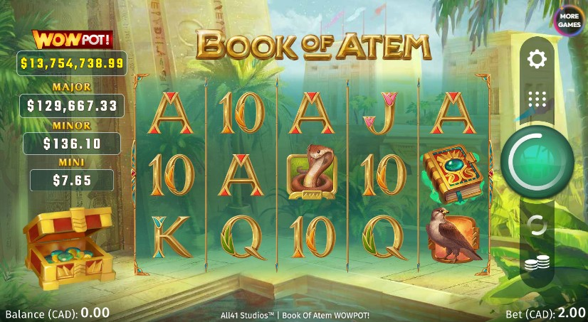

The WowPot jackpot has grown into one of the most recognized progressive jackpot systems in online slots. While many players see it as a single product, the WowPot network has evolved significantly over time.
Before the modern WowPot system launched, Microgaming operated an earlier progressive jackpot setup tied to older classic slots. These early versions were eventually retired quietly as the company prepared for a larger network relaunch.
This phase is best described as the foundation for what would later become the modern WowPot system.
The modern WowPot franchise officially began in 2020 with the release of Wheel of Wishes. This marked the introduction of the shared progressive network still used today.
Key innovations included:
The four-tier structure includes:

Following the launch, WowPot quickly expanded across multiple slot titles. Early standout releases included:
This period helped establish WowPot as a major progressive network and saw some of its earliest record wins.
The next major phase came with the addition of Megaways titles. These games expanded the reach of the WowPot system significantly.
Popular examples include:
Today, WowPot operates as part of the broader Games Global ecosystem and spans multiple developers and slot releases.
The network has paid out hundreds of millions globally and remains one of the most active progressive jackpot systems available.
The WowPot franchise has evolved from a relatively small legacy jackpot concept into one of the largest progressive systems in online gaming. Its continued expansion across new slot formats suggests the network will remain highly relevant for years to come.